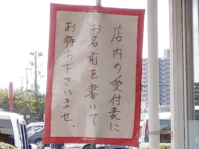
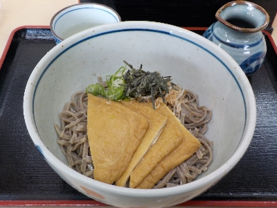

そば処あごうの冷キツネそば。
更新日 : 2025/03/08

美味しいと有名なお店なので名前を書いて順番待ちしました。待っている間色々見てたんですが、店員さんがとても忙しそうでした。

待ってる間によくよく考えて選んだのがこのキツネそば1050円です。
キツネうどんは食べても蕎麦はなかなか食べないかもと思い注文しました。
お蕎麦は麺が短く腰があまりありませんでした。蕎麦味がしっかりあり、出雲蕎麦らしいと思いながら食べました。
このごろアレンジされた出雲蕎麦が多く、これは出雲そばじゃないよって思うことがあるんですが、これは出雲そばですね。人気があるってことはこういうのが食べたいって思っている人が多いんだな。
近頃鼻の調子が悪いので、良くなったらまた行きたいです。